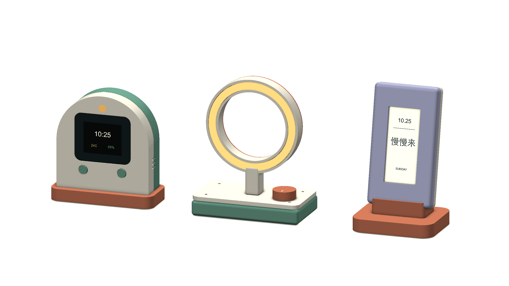
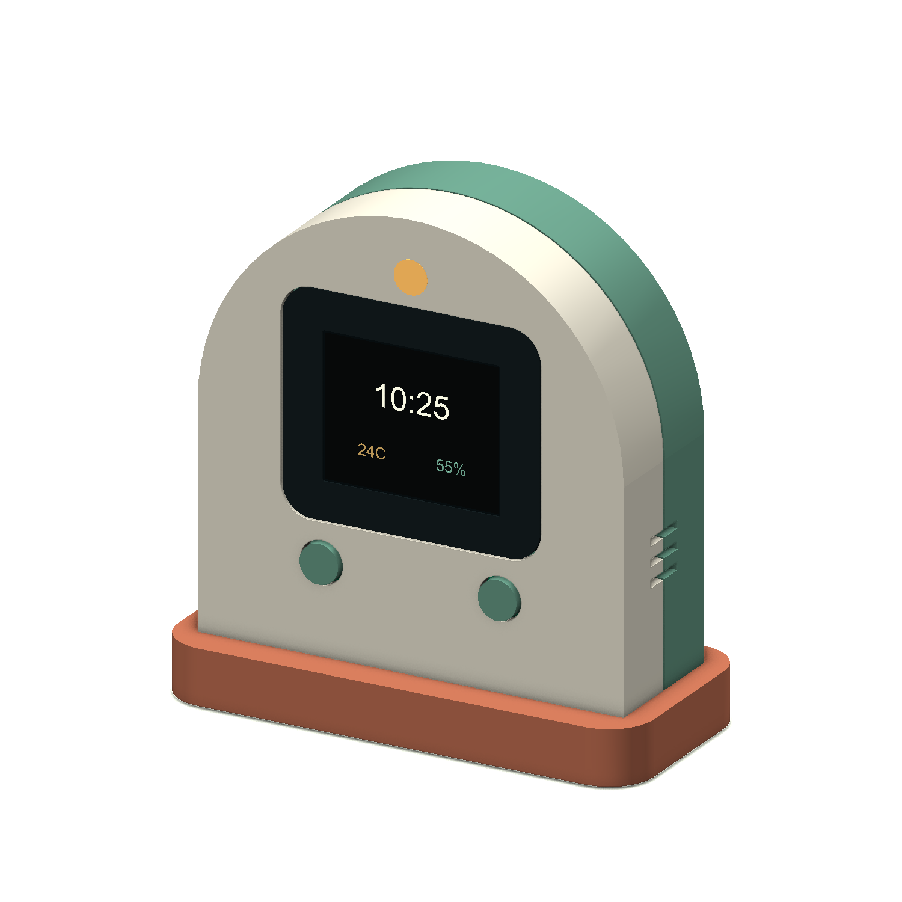
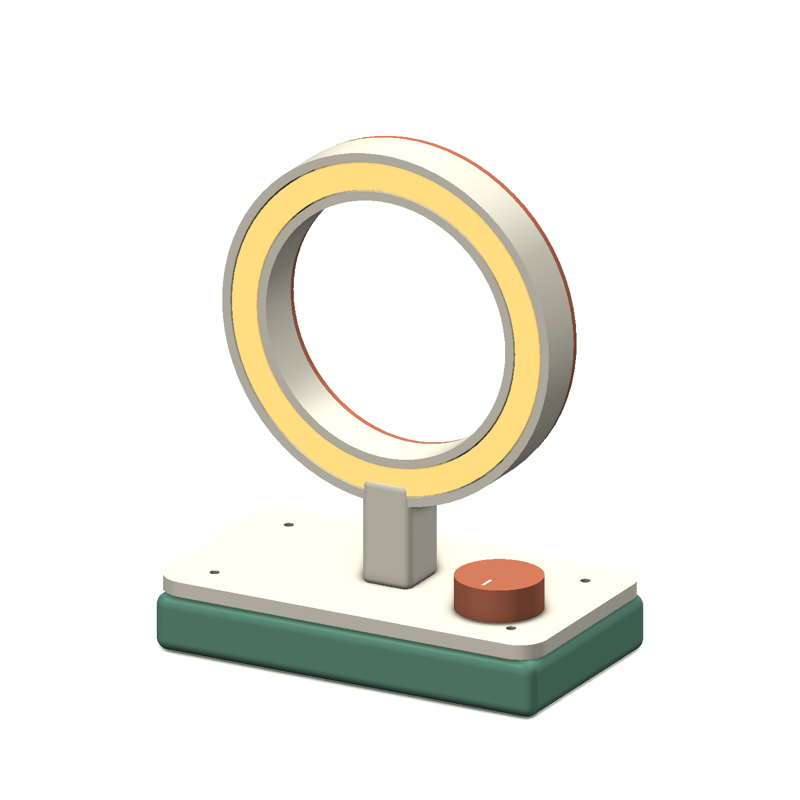
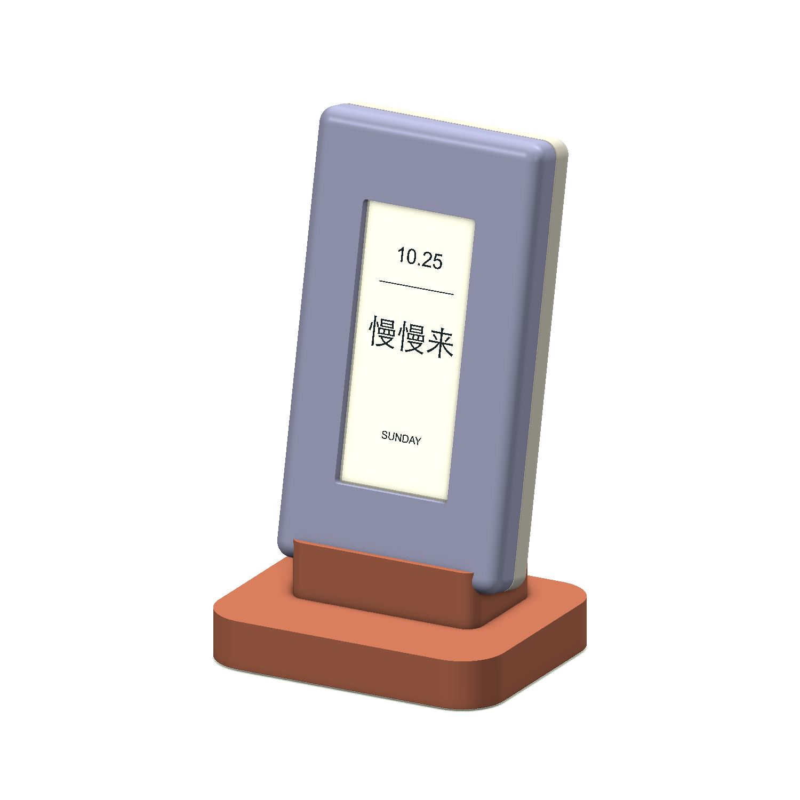

这三款已建立完整实体与内部布局，并通过静态几何检查。电路、固件、实际器件配合和打印工艺还需验证。

拱形小屏幕、实体按钮与侧边温湿度通风口。
时间显示、室内温湿度、按键切换页面
内部布局 · 拆解图 · 尺寸与边界

悬起一圈暖光，用一只旋钮控制明暗与呼吸节奏。
旋钮调光、按压开关、呼吸灯模式

一块竖放的电子纸，留下日期、短句和想记住的小事。
日期与短句显示、手机更新留言、背面按键翻页